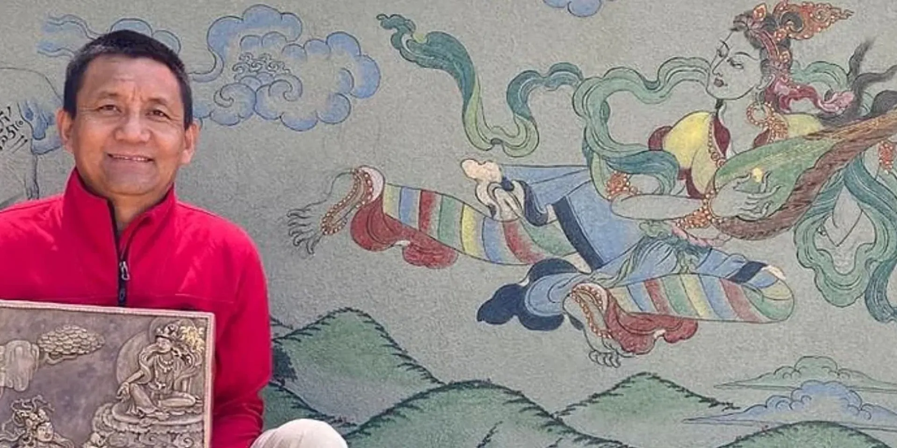

WELCOME!

My name is Gyurme Ragbye, I am a Master painter and craftsman. I was born in Tanay, Tibet in 1969. My family sent me to the Mindroling monastery upon the invitation of the head monk to study painting and traditional arts at the age of 15. My first teacher was from Kham (Guangzhou) located in Eastern Tibet. After initial study, I went to live with my teacher, Lama Tsekyab in order to fully absorb the rich tradition of Tibetan painting, of which my teacher was master. The famous paintings of Korkyim Monastery were created by my teacher, during the period when Tibetans were once again allowed to worship and rebuild their temples and monasteries. While still young, I became very adept in Tibetan ritual and monastery traditions. I later became manager and rule keeper of the monastery, and led chants at Mindroling until 1998. I have painted and assisted in the restoration of hundreds of the temple paintings. In 1998 I was invited to teach painting at the Shanshung Institute in Italy, one of the most important Tibetan Buddhist centers outside of Tibet. I spent the next two years teaching Westerners traditional Tibetan art and sculpture. I have practiced and taught this traditional Tibetan art form for the past 35 years, and in this corner of the internet I share with the world all my work in the form of prints, original artworks, and other instruments for spiritual practice.
With gratitude,
Lama Gyurme